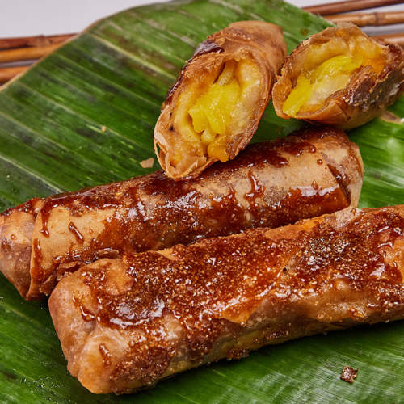
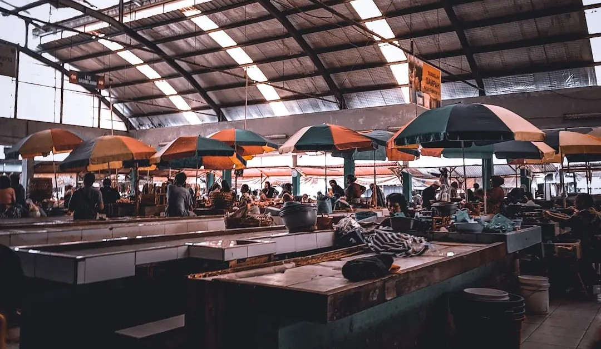

From busy street corners to local markets, Leyte’s street food scene is full of flavor, color, and everyday charm. These quick bites and snacks offer a fun and affordable way to experience local tastes, making them a must-try for anyone looking to explore the province beyond traditional meals.

Street food in Leyte reflects the creativity and resourcefulness of Filipino cuisine, turning simple ingredients into flavorful snacks enjoyed by people of all ages. Popular options include skewered meats, fried treats, and grilled delicacies, often served with a variety of dipping sauces. These foods are commonly found in night markets, roadside stalls, and near schools, where the lively atmosphere adds to the overall experience.
Beyond savory snacks, Leyte also offers a variety of sweet street treats. Local favorites like Banana cue and Turon provide a satisfying combination of caramelized sugar and fried goodness. Whether you’re grabbing a quick bite on the go or enjoying a casual food trip, street food in Leyte delivers both flavor and a glimpse into everyday local life.

Street food in Leyte is affordable and widely available in markets and roadside stalls.
Many street foods are served on skewers and paired with dipping sauces.
Turon is a popular snack made with banana wrapped in spring roll pastry and fried.

